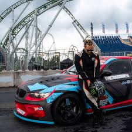
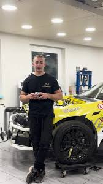
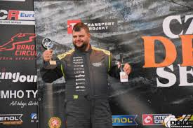

Mi az a driftelés mint sport?
A driftelés egy látványos és technikás motorsport, ahol az autóvezetők kontrollált csúszásban tartják járművüket kanyarokon keresztül. Eredetileg Japán hegyeiből indult, ma már világszintű versenyág lett.
Magyar Pro kategóriás Driftesek

Piskolty Kevin
Piskolty Kevin egy kiemelkedő magyar driftversenyző, aki a nemzetközi Drift Masters Grand Prix (DMGP) sorozatban szerepel. A 2024-es szezonban a BMW E92 LSX szuperfeltöltős motorral szerelt autójával indult, amely körülbelül 1000 lóerőt teljesít.

Szabó Roland aka 2JZ Roli
Szabó Roland, közismert nevén „2JZ Roli”, a magyar drift közösség egyik kiemelkedő tagja, aki a Toyota Supra 2JZ motoros autójával szerzett elismerést. A 2021-es Trackwood Drift Festivalon bemutatott Toyota Supra 2JZ-es verziója 511 lóerőt és 564 Nm nyomatékot teljesít.

Magyar Peti aka Terrorbenz
Terror Benz, vagyis Magyar Tamás, a magyar drift közösség egyik ismert alakja, aki a Mercedes 190-es (W201) típusú autójával vált híressé. A jármű, amelyet "Terror Benz"-nek neveznek, egy igazi drift szörnyeteg, melynek alapja egy Mercedes-Benz 190-es, amit jelentős tuningon és módosításon esett át a legjobb drift teljesítmény érdekében.
Elért eredményeik
- 🏁 Piskolty Kevin - 2023 Máriapócs Drift OB: Top 8
- 🔥 Szabó Roland (2JZ Roli) - 2022 Trackwood Drift Festival: Közönség kedvence
- 🥉 Magyar Peti (Terrorbenz) - 2023 Drifted.hu Showrun: 3. hely
- 🎥 Több mint 1 millió megtekintés TikTokon és YouTube-on
- 🚗 Egyedi építésű 2JZ-GTE, M50 Turbo és V8-as drift autók